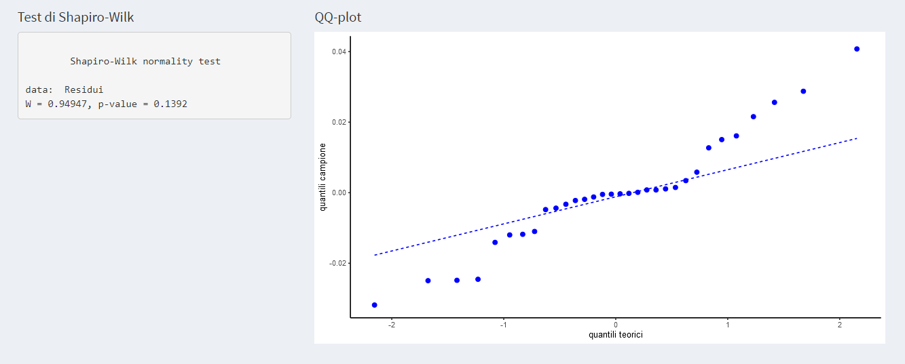

Capitolo 4 Analisi della Varianza
4.1 Analisi della varianza a un fattore
Consideriamo il dataset Collirio
## Nessuna A.R A5s A10s
## 1 0.0285 0.0377 0.0677 0.0920
## 2 0.0304 0.0346 0.0604 0.0934
## 3 0.0295 0.0369 0.0673 0.0948
## 4 0.0318 0.0439 0.0674 0.1011
## 5 0.0303 0.0485 0.1073 0.0833
## 6 0.0315 0.0488 0.1138 0.0909
## 7 0.0322 0.0648 0.1210 0.0987
## 8 0.0315 0.0743 0.1330 0.1080che consiste in 32 misure sperimentali (Pesata) della massa di una goccia di un collirio preparato prima dell’uso in 4 modi diversi, indicati nelle colonne della tabella; questa ultima variabile (Preparazione) è un fattore qualitativo studiato a 4 livelli: Nessuna, A.R., A5s, A10s.
Possiamo modellizzare le 8 misure per ogni tipo di Preparazione come \[ y_{i1}=\mu+\alpha_1+\epsilon_{i1} \qquad y_{i2}=\mu+\alpha_2+\epsilon_{i2} \qquad y_{i3}=\mu+\alpha_3+\epsilon_{i3} \qquad y_{i4}=\mu+\alpha_4+\epsilon_{i4} \] dove \(\mu+\alpha_i\) è la media “vera” della Pesata con \(\mu\) parametro comune a tutti gli effetti, detta media complessiva, e \(\alpha_1, \alpha_2, \alpha_3\) e \(\alpha_4\) sono i contributi nella media “vera” dovuti all’effetto della Preparazione: Nessuna, A.R., A5s, A10s. Inoltre gli errori casuali \[ \epsilon_{i1}\sim N(0,\sigma^2) \qquad \epsilon_{i2}\sim N(0,\sigma^2) \qquad \epsilon_{i3}\sim N(0,\sigma^2) \qquad \epsilon_{i4}\sim N(0,\sigma^2) \] sono a due a due non correlati tra loro. Si noti che è richiesto che abbiano tutti la stessa varianza \(\sigma^2\) (ipotesi di omoschedasticità).
Cominciamo con l’importare in Dati/Esempi Master il dataset Collirio. In “Variabili” nella pagina “Variabili qualitative” bisogna selezionare la variabile Preparazione (fattore qualitativo a 4 livelli)

Esaminiamo l’effetto del fattore Preparazione sulla Pesata. Per avere una prima idea grafica possiamo, in “Statistica descrittiva/Box plot”, ottenere i box plot delle quattro colonne di dati.
Vogliamo testare se \[ \alpha_1=\alpha_2=\alpha_3=\alpha_4=0 \] i.e. se la Preparazione è ininfluente sulla Pesata oppure se per almeno un \(i\) \[ \alpha_i \neq \ 0 \] Vogliamo verificare se esiste un effetto statisticamente significativo del fattore Preparazione sui dati di Pesata oppure se le variazioni numeriche che si osservano sono dovute al caso.
Introduciamo la media della variazione tra gruppi,calcolata come somma degli scarti di ogni media di gruppo dalla media generale, moltiplicati per il numero di dati di ciascun gruppo, e divisa per i gradi di libertà: \[ MS_{tra}=\frac{\sum_{j=1}^nm_j(\bar{y_j}-\bar{y})^2}{n-1} \] Nel nostro esempio numerico \(n=4\) (numero di livelli del fattore Preparazione), \(m_j=8\) (numerosità di ogni gruppo) per ogni \(j= 1, 2, 3, 4\) e \(\bar{y_j}\) media campionaria di ogni gruppo. Nel menù “Statistica descrittiva/ Summary” si ottengono gli indicatori di posizione, di dispersione e la numerosità campionaria per ogni singolo gruppo
Si può provare che:
- in assenza di vero effetto gruppo (i.e. della Preparazione) \(MS_{tra}\) è uno stimatore della varianza comune \(\sigma^2\)
- in presenza di vero effetto gruppo (i.e. l’effetto della Preparazione è significativo) \(MS_{tra}\) tende ad essere maggiore di \(\sigma^2\)
Confrontiamo \(MS_{tra}\) con la varianza combinata \[ MS_{in}=s_c^2=\frac{(m_1-1)s_1^2+\cdots+(m_n-1)s_n^2}{m-n} \] dove \(m\) indica la numerosità del campione (nel nostro esempio \(m=32\)) e \(s_j^2\) la deviazione standard campionaria del gruppo \(j\). Si noti che non è altro che la generalizzazione al caso di \(n\) gruppi della varianza combinata già definita nel caso \(n=2\) nel capitolo della Statistica inferenziale. \(MS_{in}\) è uno stimatore della varianza comune \(\sigma^2\).
Sotto l’ipotesi nulla \[ \alpha_1=\alpha_2=\alpha_3=\alpha_4=0 \] si può dimostrare che
\[ \frac{MS_{tra}}{MS_{in}} \sim F(n-1,m-n) \] dove \(F\) è la distribuzione di Fisher già introdotta nel capitolo della Statistica inferenziale (F-test).
E’ possibile quindi eseguire il test d’ipotesi (ad una coda, poichè, come abbiamo detto, il rapporto considerato tende ad essere maggiore o uguale a 1) \[ \rm{H_0:\ } \alpha_1=\alpha_2=\alpha_3=\alpha_4=0 \qquad \rm{vs} \qquad \rm{H_1:\ } \alpha_i\neq0 \quad \rm{per \ almeno\ un\ } i \] Rigettiamo l’ipotesi nulla se il risultato \(\frac{MS_{tra}}{MS_{in}}\) ottenuto dal nostro campione è maggiore del \((1-\alpha)\)-esimo quantile (\(\alpha\) livello di significatività, in generale \(\alpha=0.05\)) della distribuzione \(F(n-1,m-n)\) (zona blu a destra, che essendo il test ad una coda rapprenta il 5% delle possibilità esistenti). Per eseguire il test ANOVA del nostro esempio, una volta caricati i dati, in Statistica Inferenziale /Anova si ottiene
in cui viene fornito il valore della statistica \(\frac{MS_{tra}}{MS_{in}}\) e il p-value. Il ragionamento è il consueto: rifiutiamo l’ipotesi nulla e quindi il fattore Preparazione è significativo se il p-value è minore di 0.05 o equivalentemente se nel grafico la linea verde (che rapprenta il valore della statistica) è nella zona blu.
Viene fornito anche il seguente output
 in cui sono indicate le somme quadratiche e le relative medie tra e nei gruppi, il rapporto delle medie (ossia la statistica \(\frac{MS_{tra}}{MS_{in}}\)) e il \(p-value\).
in cui sono indicate le somme quadratiche e le relative medie tra e nei gruppi, il rapporto delle medie (ossia la statistica \(\frac{MS_{tra}}{MS_{in}}\)) e il \(p-value\).
Per poter considerare vere le conclusioni fin qui raggiunte bisogna verificare le ipotesi da cui siamo partiti:
- Normalità
Per quanto riguarda la normalità dei residui viene fornito il test di Shapiro-Wilk e il qq-plot, già discussi nei capitoli precedenti

Omoschedasticità
Per quanto riguarda l’omoschedasticità vengono forniti i seguenti test:test di Bartlett - poco robusto (sensibile alla violazione della ipotesi di normalità)
test di Fligner-Killeen - più robusto del test di Bartlett
- test di Levene - da usare se si hanno numerosità campionarie diverse

- test di Breusch-Pagan - adatto a campioni con numerosità grande
- test di Cochran - test della varianza massima (minima)
Si osservi che nel nostro esempio tutti i test (vedi figure sopra) evidenziano che non è verificata l’ipotesi di omoschedasticità (p-value<<0.05). Il test Anova non è quindi applicabile. In casi come questo diventa necessario rivedere e verificare che non siano presenti valori anomali nei dati (si veda dataset Collirio_1waov) oppure, se tutti i dati sono “buoni” e si dimostra che la distribuzione degli stessi non è normale (oppure non si può raggiungere alcuna conclusione al riguardo perché ad esempio si hanno pochi dati) si impiega un test non parametrico quale ad es. il test di Kruskal-Wallis che è appunto l’equivalente non parametrico della ANOVA.
4.2 Analisi della varianza a due fattori
Consideriamo il dataset di 32 misure sperimentali della Pesata di un collirio (sono le stesse misure del dataset Collirio_1waov) in cui distinguiamo due fattori qualitativi Preparazione [del campione] e Lotto, numero di lotto di produzione del collirio.
Il primo fattore ha 4 livelli (Nessuna, A.R, A5s e A10s), il secondo 2 (2150, 2151).
Oltre alla modalità di Preparazione si vuole verificare ora se la pesata di ogni goccia di collirio dipende anche dal fattore Lotto di produzione
Possiamo rappresentare i dati in 4 colonne (una per ogni livello del fattore Preparazione) e 2 gruppi di righe (una per ogni livello del fattore Lotto). Ci sono 4 ripetizioni in ognuna delle 8 celle Preparazione x Lotto
## Nessuna A.R A5s A10s
## 2150 0.0185 0.0377 0.0677 0.0920
## 0.0304 0.0346 0.0604 0.0934
## 0.0295 0.0369 0.0673 0.0948
## 0.0318 0.0439 0.0674 0.1011
## 2151 0.0303 0.0485 0.0773 0.0833
## 0.0315 0.0488 0.0738 0.0909
## 0.0322 0.0448 0.0821 0.0987
## 0.0315 0.0543 0.0830 0.1080Possiamo modellizzare le 4 misure per ognuna delle 8 combinazioni Preparazione x Lotto
\[ y_{ijk}=\mu+\alpha_{i}+\beta_{j}+(\alpha \beta)_{ij}+\epsilon_{ijk} \] dove \(\mu+\alpha_{i}+\beta_{j}+(\alpha \beta)_{ij}\) sono le medie “vere” della Pesata, \(\alpha_i\) e \(\beta_j\) sono gli effetti sulla Pesata media dovuti rispettivamente dai fattori Preparazione e Lotto, e \((\alpha \beta)_{ij}\) gli effetti sulla Pesata media non attribuibili all’effetto lineare di \(\alpha_i\) e \(\beta_j\) presi da soli; questo effetto combinato di \(\alpha_i\) e \(\beta_j\) è un effetto cosiddetto di interazione dei due fattori. Come nei casi precedenti formuliamo l’ipotesi che gli errori siano \[ \epsilon_{ijk} \sim N(0,1) \] e indipendenti tra loro.
Vogliamo testare la significatività statistica dell’effetto Preparazione \[ \rm{H_{0,1}:\ } \alpha_{1}=\alpha_{2}=\alpha_{3}=\alpha_{4}=0 \qquad \rm{vs} \qquad \rm{H_{1,1}:\ } \alpha_{i}\neq 0 \quad \rm{per \ almeno \ un} \ i \] dell’effetto Lotto \[ \rm{H_{0,2}:\ } \beta_{1}=\beta_{2}=0 \qquad \rm{vs} \qquad \rm{H_{1,2}:\ } \beta_{j}\neq 0 \quad \rm{per \ almeno \ un} \ j \]
e dell’effetto interazione Preparazione x Lotto \[ \rm{H_{0,12}:\ } (\alpha \beta)_{ij}=0 \qquad \rm{vs} \qquad \rm{H_{1,2}:\ } (\alpha \beta)_{ij}\neq 0 \quad \rm{per \ almeno \ un} \ ij \]
Consideriamo:
la media della variazione del 1° fattore (Preparazione) \[ MS_{F_1}=\frac{bm\sum_{i=1}^a(\bar{y}_{*i} -\bar{y})^2}{a-1} \] dove \(\bar{y}_{*i}\) è la media campionaria per ognuno degli \(a\) livelli del fattore Preparazione (nel nostro esempio \(a=4\), quindi si calcola la media di ciascuna delle 4 colonne del dataset), mentre \(\bar{y}\) è la media campionaria di tutte le \(abm\) misure (dove \(b=2\) sono i livelli del fattore Lotto, \(m=4\) è la numerosità campionaria delle 8 combinazioni Preparazione x Lotto, e \(abm= 4·2·4=32\) è il numero complessivo delle misure).
La media della variazione del 2° fattore (Lotto) si calcola come segue: \[ MS_{F_2}=\frac{am\sum_{j=1}^b(\bar{y}_{j*} -\bar{y})^2}{b-1} \] dove \(\bar{y}_{j*}\) è la media campionaria per ognuno dei \(b=2\) livelli del fattore Lotto.
La media della variazione dell’interazione è data da \[ MS_{{int}}=\frac{m\sum_{i=1}^a\sum_{j=1}^b(\bar{y}_{ij}-\bar{y}_{i*}-\bar{y}_{*j} -\bar{y})^2}{(a-1)(b-1)} \]
e la media dei residui \[ MS_{{res}}=\frac{\sum_{i=1}^a\sum_{j=1}^b\sum_{k=1}^m(y_{ijk}-\bar{y}_{ij})^2}{ab(m-1)} \]
Si può dimostrare che sotto l’ipotesi nulla \(\rm{H_{0,1}}\), \(\rm{H_{0,2}}\) e \(\rm{H_{0,2}}\) dei 3 test precedentemente descritti che
\[\begin{eqnarray*} \frac{MS_{F_1}}{MS_{{res}}}&\sim&F(a-1,ab(m-1))\\ \frac{MS_{F_2}}{MS_{{res}}}&\sim&F(b-1,ab(m-1))\\ \frac{MS_{{int}}}{MS_{{res}}}&\sim&F((a-1)(b-1),ab(m-1)) \end{eqnarray*}\]
Per ogni test si può procedere come abbiamo visto nel paragrafo precedente.
Si ricorda che è importante verificare la sussistenza delle ipotesi di costruzione della ANOVA (errori distribuiti come la normale, omoschedastici e indipendenti tra loro) per potere sostenere la validità del risulato dei test.
Vediamo come eseguire l’analisi della varianza per il dataset Collirio_2waov. Una volta caricato il dataset isogna indicare al software in “Dati/Variabili” quali sono i fattori qualitativi. Nel nostro caso Preparazione e Lotto
 Quindi in “Statistica inferenziale/Anova” nella pagina “Anova:due fattori” sono forniti i 3 test e il consueto output
Quindi in “Statistica inferenziale/Anova” nella pagina “Anova:due fattori” sono forniti i 3 test e il consueto output

 in cui sono indicate le medie \(MS_{F_1}, MS_{F_2}, MS_{F_{int}}\) e \(MS_{F_{res}}\) sopra definite, le relative statistiche e il valore del p-value.
in cui sono indicate le medie \(MS_{F_1}, MS_{F_2}, MS_{F_{int}}\) e \(MS_{F_{res}}\) sopra definite, le relative statistiche e il valore del p-value.
Vengono forniti anche i grafici di interazione. Quando le linee dei grafici di interazione non sono parallele si può sospettare l’esistenza di una interazione tra i fattori interessati.
 Per quanto riguarda la verifica delle ipotesi si prosegue con la stessa logica della Anova a un fattore nella pagina “Verifica ipotesi: 2-waov”.
Per quanto riguarda la verifica delle ipotesi si prosegue con la stessa logica della Anova a un fattore nella pagina “Verifica ipotesi: 2-waov”.